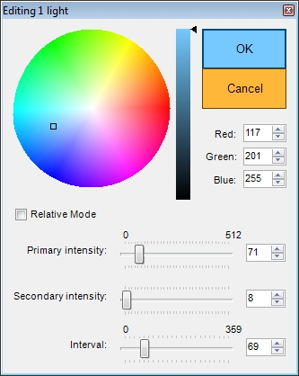

Color Picker plugin lets you edit Dynamic Lights properties and sector "lightcolor" and "fadecolor" properties quickly.
Default key: K.
Found in: Preferences -> Controls -> Tools -> Open Color Picker.
To edit light properties:
Select some lights in 2D mode or (GZDoom) Visual Mode and click Color Picker button / press a shortcut key to open Color Picker window.
You can enable Relative mode if you have several lights with different settings selected and want to scale them all up/down a bit.
If nothing is selected in (GZDoom) Visual Mode, you can hilight a Light Thing and then open Color Picker window to edit it's properties.
To edit sector colors (UDMF only):
Select some sectors in 2D mode, or some surfaces in (GZDoom) Visual Mode, then open Color Picker window.
Sector color ("lightcolor" property) and Fade color ("fadecolor" property) can be set in this mode.
If nothing is selected in (GZDoom) Visual Mode, you can hilight a surface and then open Color Picker window to edit sector colors of sector, to which hilighted surface belongs.